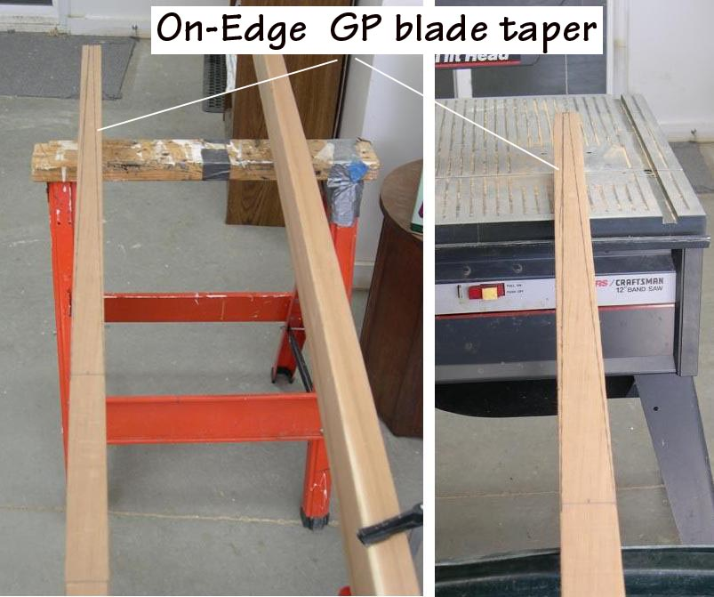

| Greenland Paddle Construction | Menu Previous Page Next Page |
|
 After reviewing the previous drawings, it's time to being construction of the Greenland Paddle. The first step is to mark out the on-edge taper of the blades. First decide on the loom length and paddle length. Cut off the 2 X 4 at the correct length. ( 84 inches in the case of the paddle shown). Mark out the loom and draw the taper from the end of the loom to the end of the blade ( .25"). If you are using the alternate method of ending the taper nearer the center of the loom, mark the taper accordingly. A pencil or a marker pen can be used. The four blade tapers must be marked and cut before the paddle profile is later defined (top view). |
|